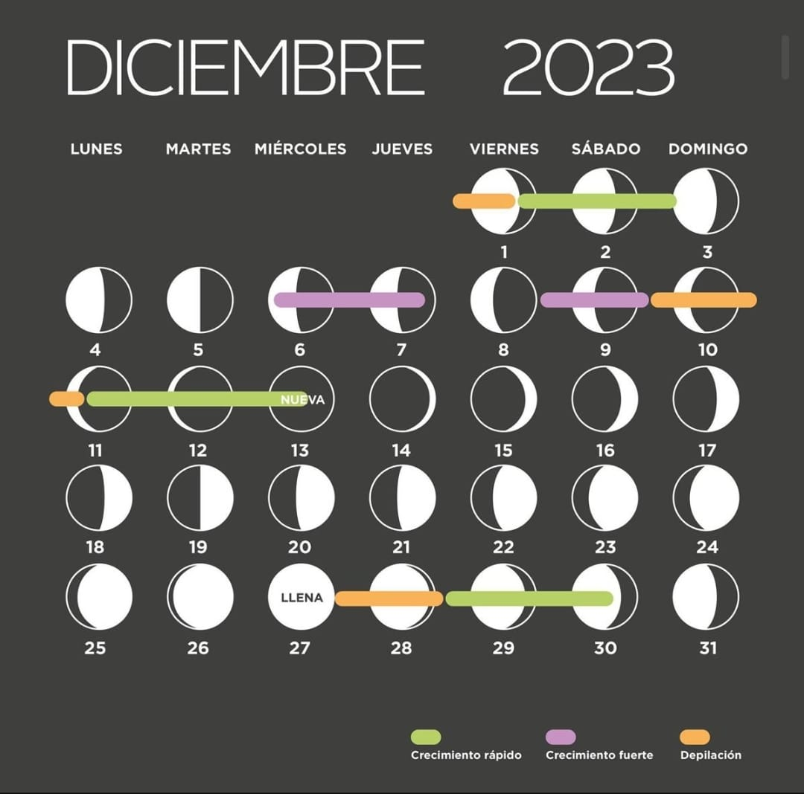
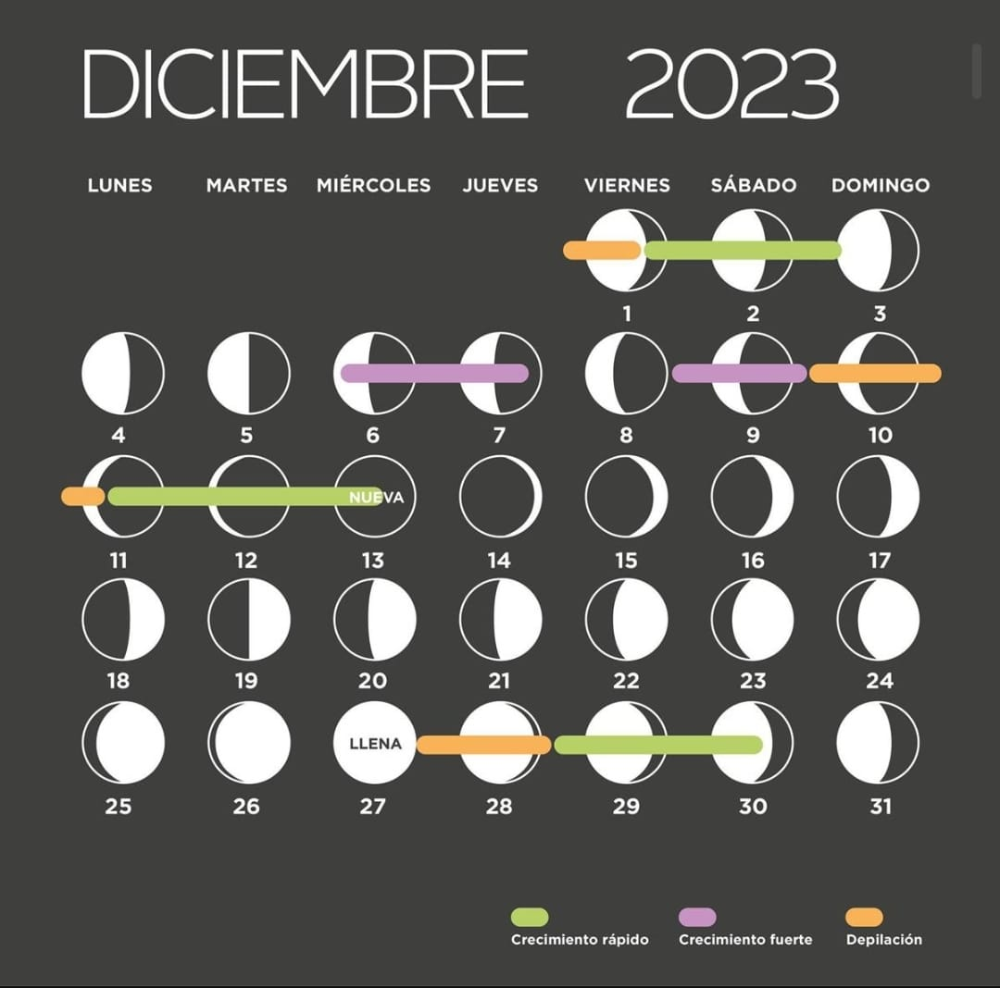

Historia de mi jardin urbano
Desde niño he vivido en el campo, pero por dificultades con el agua potable, el acceso a internet y las constantes fallas del sistema de electricidad de la zona, tuvimos que volver a la ciudad. Ahora bien, estamos en una zona urbana, pero muy cerca a lo rural. Aún tenemos montañas, riachuelos y zonas verdes amplias alrededor, pero ya en una parte de la ciudad donde si hay acceso a agua potable y demás servicios que son fundamentales para mí preparación académica, y para los cuidados médicos y de salud de mi abuela en situación de postración por cáncer y de mi madre, quién hace más de 10 años quedó en condición de discapacidad física por un accidente de trabajo. Al volver, la casa se sentía vacía, no sólo por la muerte de mi abuelo, sino por la falta que nos hacía tener de nuevo nuestros jardines y plantas. Y aunque seguimos viajando todos los fines de semana a la casa en la vereda, para velar por ella, no es lo mismo, volver a una casa sin nada de verde en ella. Entonces, como homenaje a mi abuelo, que amaba la naturaleza y soñaba con irse a vivir del todo al campo, con mi madre, empezamos a sembrar plantas y flores en nuestro hogar.
Hoy en día tenemos más de 30 plantas, de diferente tipo, mucho orégano y algunos frutales que sembramos desde la pepita, y que ahora tienen un metro o más de altas, las cuales esperamos trasladar pronto a la vereda, para verlas crecer y producir limones, limón mandarino, aguacate, naranjas y mandarinas.
También hemos sembrado cilantro, perejil, pimentón, ají picante y algunas especias, como romero, albahaca, tomillo, ruda, entre otras. Tengo el proyecto ampliar de manera vertical y crear un pequeño huerto urbano, que nos permita cosechar algunos alimentos, en un tiempo no muy lejano.
Para esto, he aprendido a usar los residuos orgánicos para hacer abono natural y aguas de riego, que permiten nutrir nuestras plantas.

Temas que tocaré más a fondo en próximos artículos. Espero me acompañen en este proyecto, para que aprendamos juntos.
-Importancia del medio ambiente en la vida de los seres humanos.
-Por que debemos cuidar el agua? Cuales son los peligros que enfrentamos sin agua consumible?
-Contaminación de los suelos -- Como las actividades del hombre perjudican las condiciones del suelo.
-Contaminación luminica y contaminación auditiva -- Como afecta a los seres vivos?
-Bioindicadores -- Que son, y como funcionan?
-Que es y para que sirve reciclar?
-Por que es importante ser un consumidor eco-responsable.
-Como podemos reducir, reutilizar, y reciclar en casa.
-Compostaje casero -- Como utilizar tus residuos organicos para hacer abono.
-Sembrar en macetas desde semillas: Paso a paso como hacerlo.
-Como preparar aguas nutritivas para el riego de tu jardin o huerto casero.
-Uso del calendario lunar para procesos de fertilización, transplante y poda.
 
